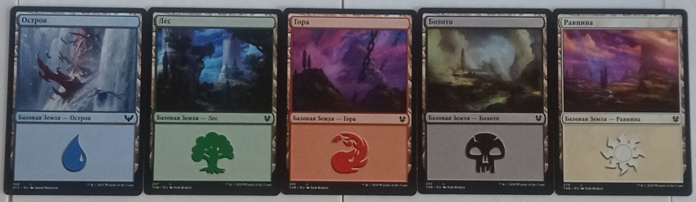
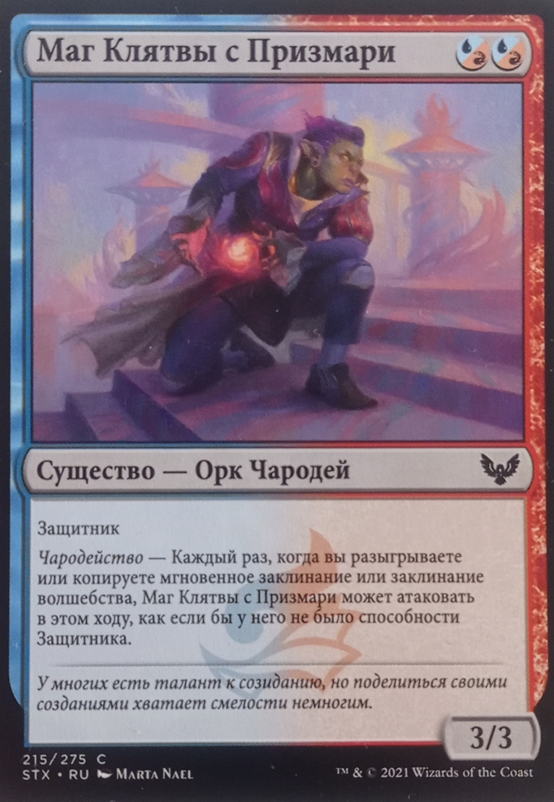

Magic The Gathering
«Magic: The Gathering» — это ККИ (коллекционная карточная игра) от 2 до 4 человек в сеттинге фэнтези. В ней вам выдается колода карт с существами, заклинаниями, артефактами и т.д., с помощью которых вы должны победить своего противника. У этой игры множество разнообразных карт и режимов, но здесь я расскажу только об основном режиме, в котором игроки сражаются друг с другом. Игра на любителя, геймплей в целом прост, но он может усложняться механиками ваших карт. Можно играть как вдвоем, так же и втроем, и вчетвером, с оговоркой, что вчетвером можно сыграть 2 на 2. Обычно ККИ подразумевают, что игроки сами покупают карты и составляют из них колоды, но так как я накопил неплохую библиотеку карт, я просто составлю несколько колод на случай, если кто-то из вас ей заинтересуется.
как проходит игра
Игрокам выдается по 7 карт на руку из их колод. Если вам не нравятся карты на руке, их можно пересдать, но получить за это на одну карту меньше.
После этого определите, кто ходит первым, удобным для вас способом, и начинайте игру. В свой ход игрок может выставить одну карту земли (эти карты
являются вашей валютой, за них вы можете разыгрывать карты из своей руки). После того как игрок выставил землю, он может разыграть свои карты из руки.
Чтобы это сделать, ему нужно заплатить цену, указанную на карте. Теперь, если у игрока на поле есть его существа, он может послать их атаковать своего
соперника. Всего у игроков изначально 20 очков жизней, но это число можно увеличить с помощью некоторых карт. После того как игрок атакует другого,
перед окончанием своего хода он может еще разыграть свои карты из руки, если хочет. После окончания хода начинает ходить следующий игрок; он
выполняет ту же последовательность действий. Игра продолжается до тех пор, пока у кого-нибудь из игроков не останется 0 жизней или пока у кого-то из
игроков не закончится колода. Если колода заканчивается, игрок проигрывает.
элементы игры и правила
игровое поле

Игровое поле составляется во время игры из ваших карт земель, существ, артефактов, чар и т.д. Кстати, о землях: земель существует всего 6 видов, 5 из них
базовые — на каждый цвет (синий — вода, зеленый — земля, красный — огонь, черный — тьма, белый — свет). У каждого цвета есть карты существ, заклинаний, чар,
артефактов и т.д., а карты разных цветов отличаются своими преобладающими механиками. Например, карты зеленого цвета нацелены на восстановление жизней игрока,
на усиление существ и, собственно, на больших и сильных созданий. А вот карты синего цвета нацелены на обман соперника; синие карты изобилуют слабыми существами
и неожиданными заклинаниями, в том числе заклинаниями на отмену чужих заклинаний. Таким образом, у каждого цвета свой особый геймплей. Шестой вид земель относится
к разряду необычных, например, это могут быть земли смешанных цветов, земли, которые могут наносить урон, и т.д. Земли работают следующим образом: когда игрок
выставляет землю, он может ее повернуть на бок, и тогда игрок получит за это ману того цвета, какого была земля, которую он может потратить на розыгрыш своих карт.
После того как игрок закончил свой ход и после того как сходил его соперник, земли, которые он повернул в свой прошлый ход на бок, возвращаются в исходное положение.
Теперь он может снова их повернуть и получить ману на розыгрыш карт.
карты
Здесь просто дохрена видов карт, но я расскажу только об самых основных: это карты существ, заклинаний, чар и артефактов.

Существа — это ваша живая сила, ими вы будете атаковать, ими же вы будете защищаться. Обратите внимание на четыре вещи: посмотрите на верхний правый угол карты,
там вы найдете ее цену в мане, за которую можете выставить эту карту на стол. (В данном примере, чтобы разыграть эту карту, вам нужно потратить две маны: либо
синего цвета, либо красного цвета, либо одну синего и одну красного, как я описал ранее; ману вы получаете со своих выставленных земель.) Теперь посмотрите на
середину карты, и вы увидите вид и подвид этой карты: вид — существо, подвид — орк-чародей. Я заостряю на этом внимание, потому что некоторые карты могут быть
нацелены на конкретные подвиды. Еще ниже вы увидите свойства этой карты (не у всех существ есть свойства). В правом нижнем углу вы увидите 3/3 — это урон и
здоровье карты (урон/здоровье). Существа могут атаковать или защищаться. При атаке вы поворачиваете существо на бок, и оно наносит урон вашему противнику согласно
своим индикаторам. Но если у вашего соперника есть существа, он может ими защищаться, и тогда ваше существо нанесет урон существу вашего противника (существо
противника тоже нанесет урон вашему существу, если его урон не равен 0). Но атаковать опасно, так как после атаки существо не сможет вас защищать до следующего
вашего хода.
Карты волшебства и мгновенных заклинаний: ситуация та же, что и с существами, только вы не выставляете их на поле, и у них нет индикаторов урона и здоровья.
Вместо этого вы просто исполняете то, что написано на карте при ее розыгрыше. Волшебство от мгновенного заклинания отличается тем, что его игрок может разыграть
только в свой ход, а вот мгновенное заклинание можно разыгрывать когда угодно, лишь бы была на это мана.
Карты чар и артефактов, как и существа, выставляются на поле при их розыгрыше. Чары и артефакты могут давать игроку множество различных эффектов,
как пассивных, так и активных; некоторые даже могут стать существами на один ход.
Последнее, про что хочу сказать, — это про систему сброса карт. Помимо колоды, есть стопка с кладбищем и забвением. На кладбище попадают разыгранные
игроком карты после использования или после смерти карты. При помощи некоторых из них можно будет вернуть в свои руки и разыграть повторно, а вот если каким-то
образом карта попадает в забвение, вытащить ее оттуда уже не получится.
Остальные, более глубокие механики игры мы уже разберём по ходу геймплея за столом. :3